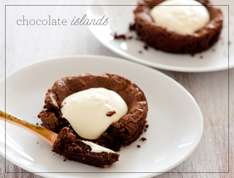
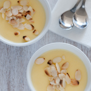
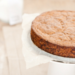

Ολοκληρωμένο παράδειγμα ιστολογίου μαγειρικής με λογότυπο GIF, κεντρικό σχήμα figure με λεζάντα και γκαλερί επιπλέον συνταγών.
<!DOCTYPE html>
<html lang="el">
<head>
<meta charset="utf-8">
<title>Εικόνες</title>
</head>
<body>
<h1><img src="images/logo.gif" alt="Από το Α έως το Κολοκυθάκι" /></h1>
<figure>
<img src="images/chocolate-islands.jpg" alt="Σοκολατένια Νησιά" title="Ατομικά Κέικ Σοκολάτας" />
<p>
<figcaption>
Αυτή η συνταγή για ατομικά κεκάκια σοκολάτας είναι τόσο απλή και τόσο απολαυστική!
</figcaption>
</p>
</figure>
<h4>Περισσότερες Συνταγές:</h4>
<p>
<img src="images/lemon-posset.jpg" alt="Ποσέτ Λεμονιού" title="Ποσέτ Λεμονιού" />
<img src="images/roasted-brussel-sprouts.jpg" alt="Ψητά Λαχανάκια Βρυξελλών" title="Ψητά Λαχανάκια Βρυξελλών" />
<img src="images/zucchini-cake.jpg" alt="Κέικ Κολοκυθιού" title="Κέικ Κολοκυθιού" />
</p>
</body>
</html>